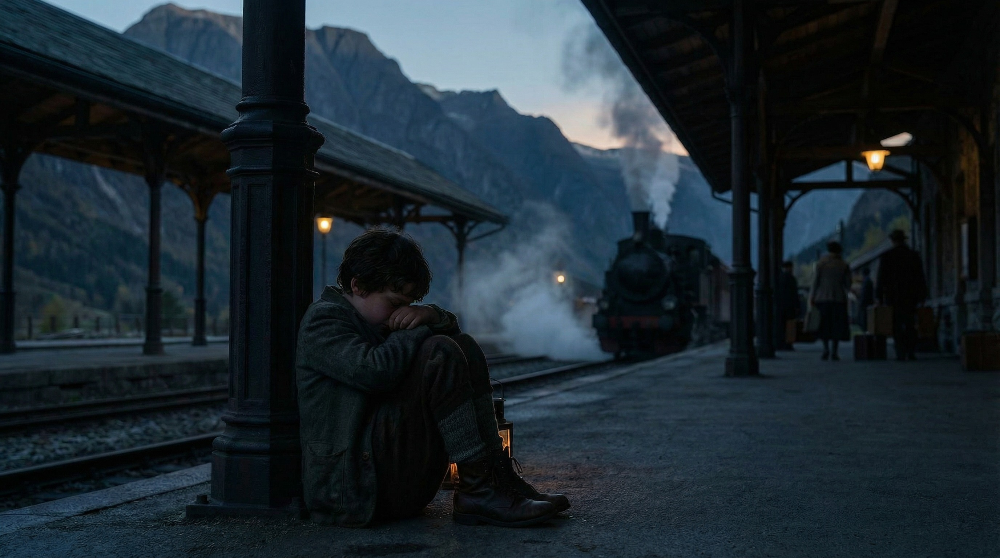
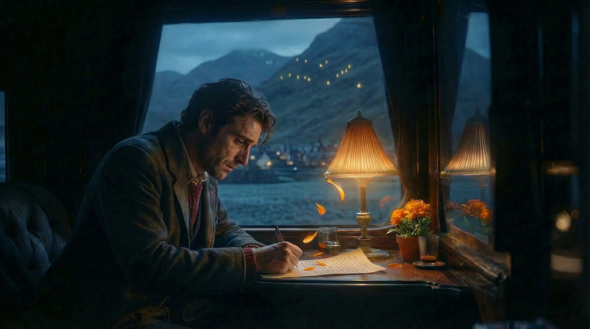

Day / Alpine Meadow / Exterior
A small world of meadow, grandmother, and Nello is established, before loss, fear, and a paw-marked letter quietly set the journey in motion.
Read full scene →Narrative Structure
At the current stage, Asym \ phase is not presented as a fully completed animated short. Instead, the project preserves its narrative through a textual screenplay structure, selected visual scenes, and a symbolic system built around trajectory, farewell, and transition.
The script is set in a Nordic-inspired landscape during the steam-train era. Its voice-over is written in English, while the Chinese subtitles are not intended as direct translation. They are designed to create another layer of meaning, so that image, voice, and subtitle do not simply repeat one another.
Scene Index
The entire story is built toward one image: a small child opening a letter and receiving the word goodbye.
Script Structure
This page functions as a scene index and archive entry point. The full text of each passage is preserved in the linked scene pages below, rather than being compressed into a single summary page.
Current Stage
At the current stage, Asym \ phase is presented as a visual development project: character design, poster design, model presentation, and script-based worldbuilding. It is not yet being presented as a fully completed animated short.
Bilingual Writing Logic
The screenplay is built through two parallel layers: English voice-over and Chinese subtitle meaning. These are intentionally related but not written as direct one-to-one translation, so that a single scene can hold more than one reading.
Archive Extension
Each linked scene page preserves the original script passage and also leaves room for future storyboard frames, shot planning, composition notes, and other visual development material as the project continues to expand.





Unlike the homepage preview, this page keeps the full five-frame storyboard route for the current script archive.
A small world of meadow, grandmother, and Nello is established, before loss, fear, and a paw-marked letter quietly set the journey in motion.
Read full scene →The journey enters its first real trial: a fearful crossing, the extinguished lantern, and the first fireflies that appear not as comfort, but as a summons.
Read full scene →Through mud, thorns, and exhaustion, the child keeps moving through the valley, while the fireflies remain in the background like a distant guiding beacon.
Read full scene →At the station, arrival brings not relief but grief, until a marigold and a familiar paw-marked envelope appear before the child.
Read full scene →Inside the train, an exhausted adult passenger begins from despair, until a marigold petal and a remembered arc of light reopen the past.
Read full scene →The letter is finally opened. Through the adult voice and Nello’s signature, sorrow begins to transform into the first quiet shape of courage.
Read full scene →The train departs with a rewritten future, while the platform is left behind in sunlight and the story closes on absence, light, and forward motion.
Read full scene →Script Logic
The screenplay is built almost shot by shot. In other words, most sentences correspond directly to a visual moment, not to abstract summary. This is why the page should be read less like a synopsis and more like a textual storyboard.
The protagonist is intentionally unnamed and remains in the first person. That choice is not accidental: it turns the child into a position the viewer can enter, rather than a distant character with a fixed identity.
The whole script is organized around one decisive image: the small child opens the letter and receives that line of goodbye. Everything before it prepares for that moment, and everything after it transforms its meaning.
Core Visual Motif
The core visual metaphor of the script is trajectory: the trace of the kerosene lamp, the route of the train, and the path of a life moving forward through time. These trajectories intersect in space, in memory, and across different stages of the self.
The story does not move toward a grand revelation. It moves toward a line of goodbye that makes solitary departure bearable.
Selected Scenes
Scene 01
The film begins from height and distance: sky, meadow, wind, snow mountains, sheep, and the small scale of the child’s world. Grandmother, the cottage, and Nello establish a life that feels complete because it is still bounded.
The first English voice-over already frames memory as something both warm and limited: “My world was small, bounded by the meadow, the Snowy mountain, and my grandmother’s stories.”
This scene also plants the wound that drives the whole script: Nello disappears while protecting the household from wolves. After that, the outside world becomes something feared rather than explored.
Scene 02
The child finally leaves the cottage and moves through meadow, woods, and stream. The forest is no longer neutral nature; it is shaped by fear, moonlight, wolf calls, and the feeling that everything outside the known world has become monstrous.
At the stream, the kerosene lamp becomes the emotional and symbolic center. The jump fails, the bag is lost, and the lamp arcs through the dark before dropping into water and going out. This is one of the most important visual turns in the whole script.
When the child is about to retreat, the fireflies appear. Their light is not consolation. It is a summons.
Scene 03
This is the pure passage scene: falling, stumbling, mud, branches, rock, breath, darkness. The child continues forward not because fear disappears, but because motion has already become unavoidable.
The fireflies remain in the background throughout these fragments. They function less as decoration than as a distant guide, carrying the possibility that the path remains open even when the world narrows.
Scene 04
Dawn arrives, the steam train enters the station, and the child—now dirty, exhausted, and emotionally overwhelmed—reaches the place that was supposed to fulfill the wish.
But the emotional climax here is not triumph. It is grief. The child suddenly knows that Nello will never return. Then, against the noise of the station, two objects appear together: a marigold and a familiar envelope marked by a paw print.
This is the hinge of the whole narrative. The story has arrived at the image it has been moving toward.
Scene 05
While the child waits at the station, another scene unfolds elsewhere: an exhausted adult man sits in a train carriage, writing in a state of emotional heaviness beside a pot of marigolds.
Then he sees, outside the window, the moving arc of light from the valley— the same arc once drawn by the falling lamp in childhood. That returning image unlocks memory and changes the direction of the scene.
The adult begins writing again, but now from another emotional state. This is where the script quietly folds time back on itself.
Scene 06
The child opens the letter. Here the screenplay reaches its true center: not a revelation of plot mechanics, but a transfer of courage through language.
The letter reads: “Goodbye, brave child. Your adventure has only just begun. In the future, you will have to set out alone, again and again. But you must never be afraid. After all... you arrived in this world on your own.”
The sadness does not vanish. But a new firmness begins to appear. This is why the whole story exists: to make this goodbye feel both impossible and necessary.
Scene 07
The final scene returns to the carriage. The marigold on the window ledge is gone. The adult now faces forward quietly, while the train moves into a wider world.
The last image returns not to the body, but to the emptied station column and the light falling there. In that ending, departure is no longer an event. It has become a condition of life.
Script Explanation
“Asym” comes from “asymptote.” It echoes the English world of the script, the trace of the lamp’s light, and the emotional condition of something that keeps approaching but never fully stays.
In the title, the backslash is not a neutral separator. Visually, it behaves like a slanted trajectory; narratively, it links one experience to the next; in a computing context, it also implies escape, separation, and path continuation. It is the mark of farewell and the sign of entering another layer.
“Phase” refers to the stage in which the small child must learn to face fear and set out alone. It is not just a period label, but the lived structure through which the whole script passes.
Narrative Reveal
This is not simply a magical story about receiving a message. The deeper structure is that the adult passenger in the train is the grown-up version of the child. In other words, the child receives a letter written by his future self.
That is why the story’s emotional force does not depend on surprise alone. It depends on recognition: the same person once left in fear, and later remembers that first departure in order to keep living.
Presentation Strategy